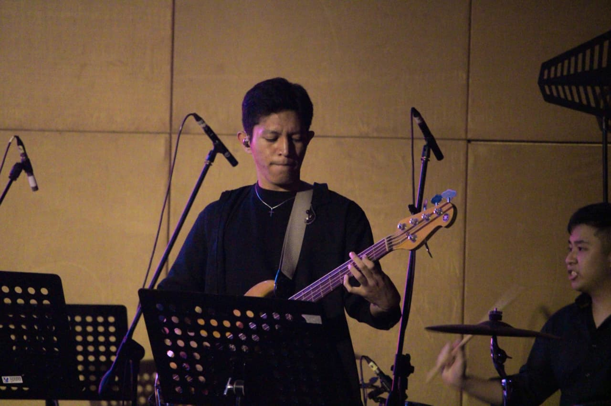
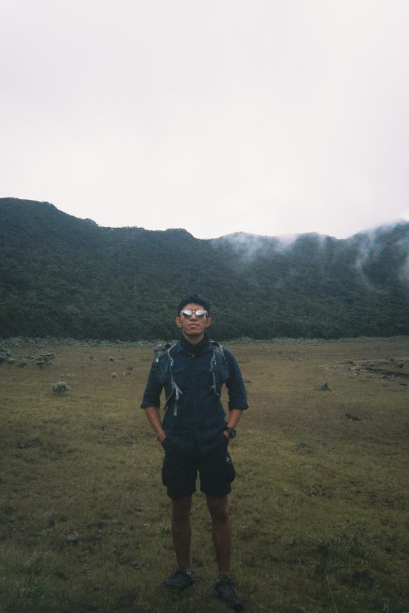
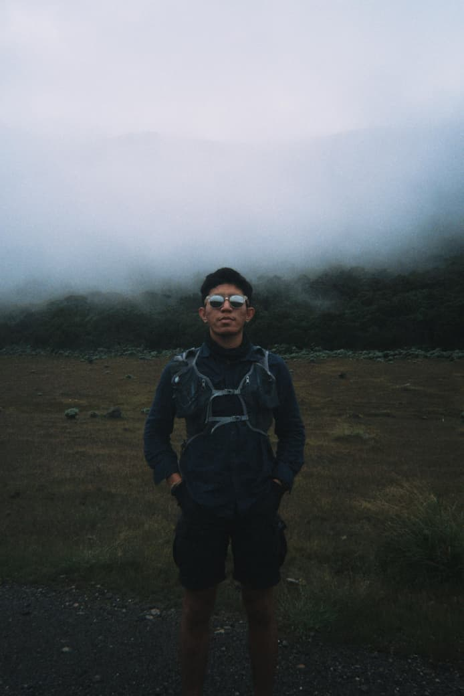
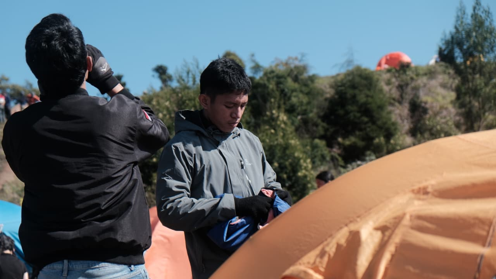

Dave Geraldo
Product Designer & Music Enthusiast
Saya mendesain produk digital yang sederhana, estetik, dan bermanfaat. Selain itu, saya juga aktif di dunia musik dan organisasi.
Lihat Project
Saya mendesain produk digital yang sederhana, estetik, dan bermanfaat. Selain itu, saya juga aktif di dunia musik dan organisasi.
Lihat Project
Saya adalah pribadi yang menyukai dunia desain dan kreativitas, dengan passion besar pada musik. Sejak kecil, seni dan musik sudah menjadi bagian penting dalam cara saya mengekspresikan diri. Perpaduan antara minat teknologi, seni musik, dan kecintaan terhadap alam membentuk karakter saya sebagai pribadi adaptif, bersemangat, dan terbuka terhadap kemungkinan baru.
Membuat dan mengedit video serta foto dengan sentuhan estetika yang profesional.
Mengolah audio dan musik agar lebih berkualitas, mendukung karya visual maupun musik.
Menangkap momen melalui fotografi yang kreatif dan penuh makna.




Menjadi Music Director untuk band kampus, mengatur aransemen musik dan pertunjukan live.
Memimpin organisasi Mahasiswa Pencinta Alam, mengelola kegiatan alam bebas dan sosial.
"Dave adalah pribadi kreatif yang mampu mengubah ide sederhana menjadi karya yang memukau. Kolaborasi dengan dia selalu menyenangkan."